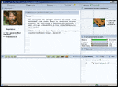

| » Рецензия новой версии Shamaal World
|
Новая версия грядет и грядет уже очень долго, что вводит геймеров SW в различные состояния нервного растройства от ступора до активной агресии в адрес разработчиков. Я не буду в очередной раз обнадеживать игроков новой «точной» датой выхода, просто расскажу о том что нас ждет.
Интерфейс.
|
Дизайн изменился полностью. Сразу бросается в глаза резкая смена фона. Закрыв окно старого чата в темных тонах, я долго пыталась привыкнуть к яркости белого фона новой версии. Нам обещают, хотя и не сразу, сделать полную настройку цветов чата и несколько скинов к игре, а пока будем довольствоваться модненькими, веселых цветов, кнопочками и глянцевыми панельками.
Однако, в противовес общему интерфейсу, игрушка обзавелась неплохим графическим оформлением. У каждой локации теперь есть картинка, диалоги квестов сопровождаются портретом собеседника, а в информации монстров можно наглядно увидеть с кем тебе придется иметь дело. К сожалению, иначе обстоит дело с образами игроков: на первых порах придется ограничется стандартым набором игровых образов.
|
|
Немного изменилась навигация. Карта теперь всегда под рукой, в правом верхнем фрейме; компас исчез и передвижение происходит непосредственно при помощи клеток карты. Так же убрано поп-окно со списком онлайн игроков, иногда доставлявшее немало неудобств при соответствующих настройках браузера или фаервол. Списки игроков перенесены в нижний правый фрейм и разделены на группы: весь мир, города, локация.
Чат и общение
|
Чат – основной фрейм игры. Здесь отображается вся жизнь Мира Шамаал: информация о боях, передвижениях в локации, общение с другими игроками. Для новой версии разработан полностью новый и функционирующий чат, с новым сетевым кодом, что сберегает 30% трафика по сравнению со старой версией. Добавлен канал «Торговля» для сообщений о купле-продаже, который при желании можно отключить. В настройках игры встроена функция игнора игроков.
|
|
Карта
|
Карта мира расширена почти в 2 раза и будет насчитывать около 1000 локаций. Добавлен еще один город-остров – Академия. Этот город изолирован от всего мира. Все новые персонажи будут рождаться именно здесь. На острове есть все условия чтобы у новичков была возможность спокойно познакомится с игрой. Уйти с острова можно только по достижении 10-го уровня и назад дороги не будет.
Появилась возможность строить свои дома, где можно сложить свои вещи, или попить чаю с друзьями без опасения что вас могут побеспокоить. Так же крафтеры, при желании и наличии тяжеленького кошелька с золотыми, смогут открыть свои магазины.
|
|
Город
|
Города поистине становятся городами.
По многочисленным просьбам игроков увеличено количество строк в рангах, добавлена функция «выгнать из города». Игрок может и сам уйти из города. В этом случае он становится странником, независимым ни от какого города. Для него все остальные игроки становятся нейтральными. В поселении «безгородних не будет мастерских и кузниц, так что странникам придется рискуя своей шкурой пробираться за этими удобствами в города.
Пополнение прилавков магазинов в городе полностью ложится на плечи мэров и производится за счет казны города.
Выборы мэра происходят автоматически каждый месяц. Подать заявку на мэрство может любой житель города – достаточно заплатить в казну города нужную сумму.
В пределах города действует команда «вызвать стражника» - в случае если в локации города присутствует житель другого города, появится NРС, агрессивно настроенный по отношению к нему.
Города теряют свои склонности, остаются только названия и большое поле деятельности для их жителей в отношении развития общего характера города.
|
|
Умения
|
Большим недостатком старой версии была несбаллансированность умений. Умения были координально пересмотрены.
В первую очередь стоит обратить внимание на то, что некоторые умения были переименованы, Полностью исчезают смерть и возможность воровать, но «Воровство» компенсируется тем, что при смерти персонаж может потерять содержимое своего рюкзака в пользу убийцы. Способности других умений, таких как «Доминирование» и «Философия» распределены между «Мистицизмом» и «Военным делом», в которое объединились «Ярость» и «Воинственность». Перед тем как начинать игру, хотелось бы посоветовать бывалым игрокам перед распределением уроков ознакомиться с разделом «Помощь» на главной странице, не надеятся на опыт старой версии.
Кроме того, появляются абсолютно новые умения. Так желающие смогут пострелять из луков и арбалетов, позволяющих атаковать противника из соседней локации. Увы, это их преимущество перед другими видами оружия не работает против ботов. Так же разделены топор и молот – теперь это два разных умения.
Эффекты от ударов тоже немного изменены. Появляется возможность преодолеть страх или очнутся от глубокого сна, а кровотечение становится более серьезным.
Тех, кто всегда стремился не только махать мечом или топором, но и создавать что-то своими руками, порадуют новые особенности крафта. За каждую успешно собраное растение или сшитый плащ мастер получает опыт, на вещи будет выгравировано/вышито/приколото (нужное подчеркнуть) имя мастера.
Сильно усложнено использование магии. Теперь, чтобы использовать заклинание необходимо иметь его в книге заклинаний. Магам придется побегать за свитками заклинаний, а так же быть внимательными в выборе одежды и оружия – вещи часто обладают характеристиками той или иной школы магии.
|
|
Предметы и ресурсы
|
В каждый вид оружия встроен параметр «точность», определяющая по тяжести оружия вероятность попадания им по противнику.
Кроме того часто для того чтоб одеть ту или иную вещь персонажу нужно иметь соответствующе характеристики.
Помимо уже известных классов предметов – одежда, эликсиры, оружие, ресурсы, свитки, которые пополнились новыми наименованиями, – появляется магический камень-телепортер, который можно установить в локации и в любой момент к нему вернутся. Сие удовольствие для тех кто не желает развивать телепатию только для того, чтоб быстро перемещаться по карте и будет оно редким и дорогим.
|
|
Персонажи
У персонажей раз в 20 уровней появляется возможность повышать характеристики. Сила удара более не возрастает с уровнями и зависит только от количества уроков в умении. Кстати, на количество уроков в умении по уровням поставлено ограничение. Не получится вбухать все уроки в одно умение за раз – придется развиваться в разных направлениях постепенно.
Квесты.
|
Вид квестов немного изменился. Больше нет «квестовых ботов»: диалог открыватся через меню «функции» И хотя по-прежнему квесты построены по системе «найди-убей-принеси», они становятся намного разнообразнее, появляется возможность вести более менее осмысленный диалог с квестовым героем. В силу того, что передача квестовых вещей невозможна, квесты становятся полностью персональными.
|

|
NРС и бои
|
NРС становятся умнее и сильнее по сравнению с предыдущей версией. Они используют по несколько видов атаки (включая обкастовку и восстановление), меняют блоки запоминая наиболее частую цель ударов противника и передвигаются по локациям, убегая от более сильного противика и атакуя более слабых. Конечно, по прежнему есть разделение на агрессивно настроеных NРС и неагрессивных, но теперь их несложно различить по цвету. Ресурсы, которые можно собрать с трупа убитого бота более соответствуют их характеру. Тушки крыс более не превращются в золотые слитки после их смерти, а овцы исправно дают только шерсть.
|
|
Усовершенствованы арены. Локации-входы на арены закрыты для атак, так чтобы после боя на арене не было возможности случайно или намеряно «добить» бывшего соперника. Добавлены арены для групповых боев с возможностью делать ставки и проводить на них турниры. Призовой фонд турнира определяется мэром и оплачивается из казны города.
Окно доступных действий тоже пренесло изменения. Блоки вынесены ссылками справа, добавлена функция «запоминания удара» так, что следущий удар можно запланировать еще до восстановления балланса. Дествия умений становятся доступными только при наличии всех условий для их выполнеия. Так, например, чтобы заклинание стало видимо в окне действий, в руках необходимо иметь посох, а в книги магии – свиток заклинания.
Кланы
|
Самое большое изменение, которое претерпела идея кланов – это возможность «роста». Введены три ранга кланов. При получении следущего ранга, у кланов будут появлятся новые возможности, такие как покупка локаций под замок/склад/крепость/цитадель, приобретения клановой вещи – кольца, статы которого может распределить глава клана.
Вступление в клан ограничивается десятым уровнем.
|
|
10 уровень – он долгожданный самый
Теперь он будет долгожданен втройне или даже больше. Десятый уровень в новой версии по праву можно назвать совершеннолетием – с него открываются такие возможности как передача вещей и денег, ставки на арене для групповых боев, вступление в клан и создание своих кланов и что самое важное – открывается дорога в большой мир, на материк.
Заключение
В целом, похоже на то, что созданы максимальные условия для хорошей РПГ, остается надеятся, что геймеры смогут их оценить и воспользоваться ими в полной мере, тем самым создав уникальный мир, где можно играть и жить.
Лаура
|
|
|
|